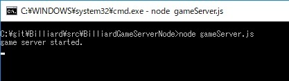
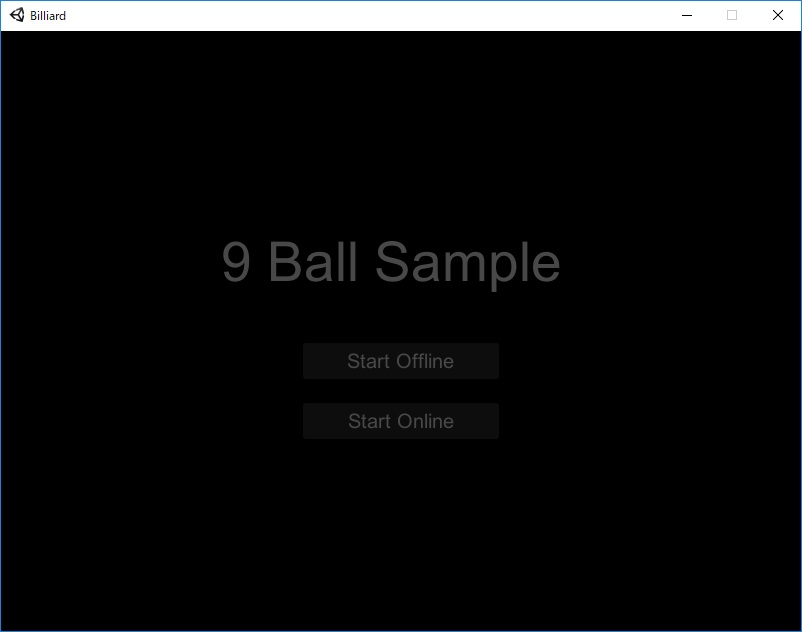
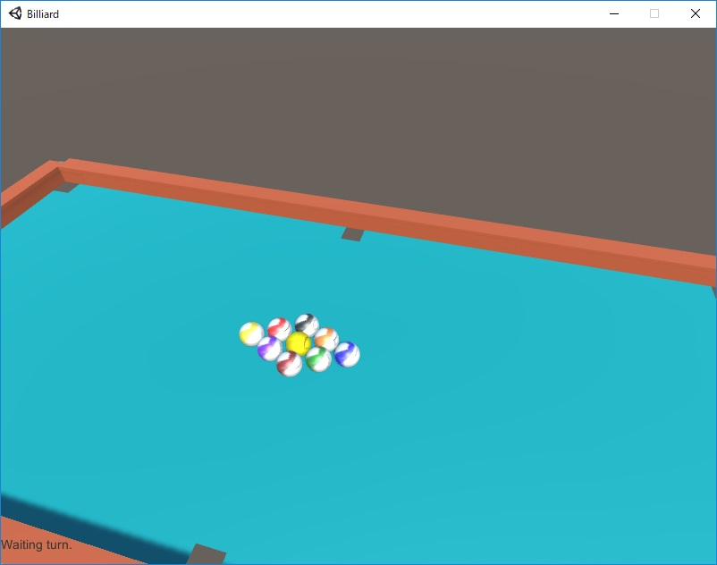
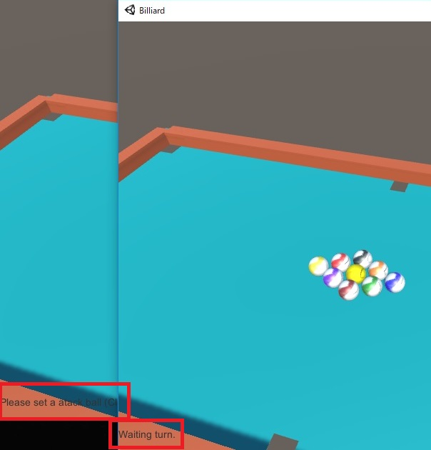
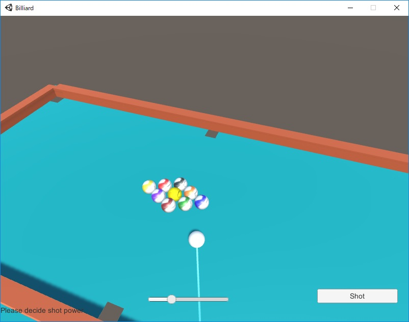
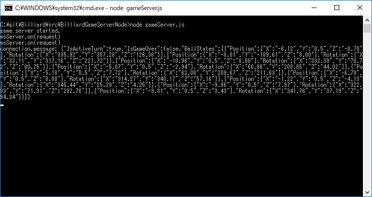
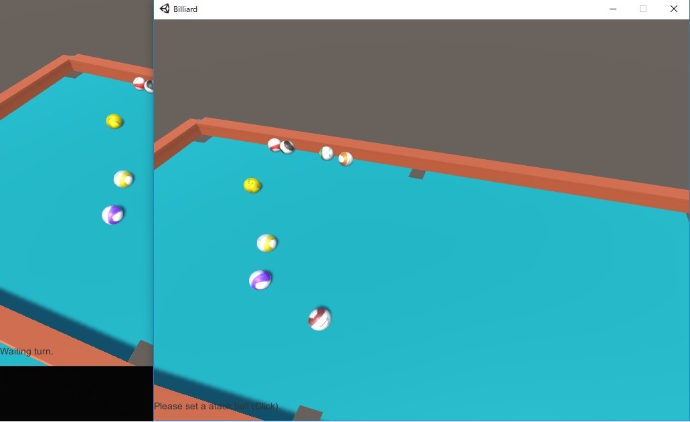
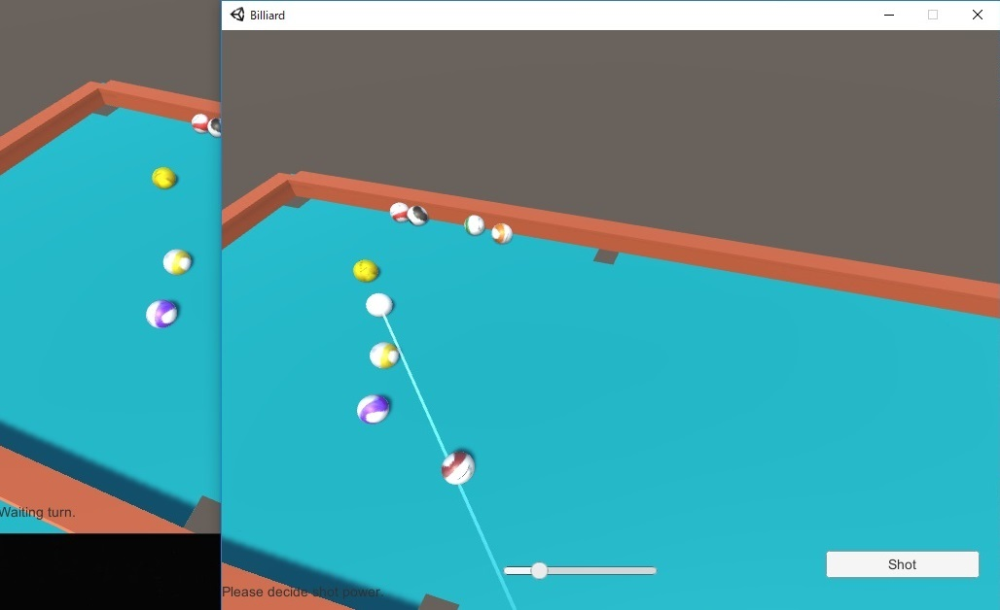
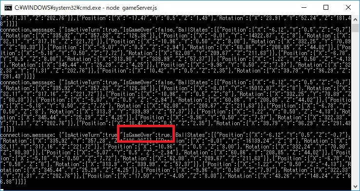
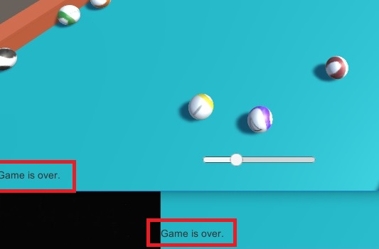

スナップショット (サンプル)
25 コミット時点 (201/10/28 (日) 22:10頃) のオンラインでのプレイ (2クライアント) の場合の
スナップショットを掲載する。

図0 ゲームサーバ (node.js で記述) の起動

図1 タイトル画面

図2 クライアント1のオンライン開始直後 (ステータスは Waiting turn)

図3 クライアント1とクライアント2のオンライン開始直後
(先に起動した方が優先、後起動は Waiting turn で待機)

図4 クライアント1で手玉を配置しショットの方向を決めた直後

図5 クライアント1でショットしショット後に各ボールが停止したら
サーバに各ボールの位置情報を送信してサーバが受信

図6 サーバから各クライアントに位置情報をエコーし、ターンをスイッチ

図7 クライアント2側でのショット直前

図8 何回かターンが進み、片方のクライアントでゲームオーバーになった状態をサーバに送信

図9 サーバから各クライアントにゲームオーバー状態を送信し、各クライアントでゲームオーバー表示